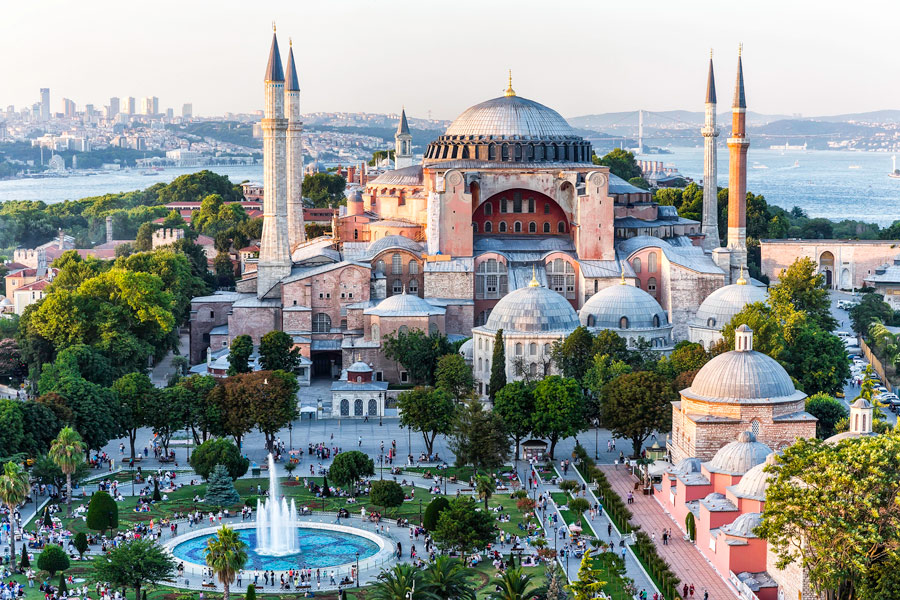
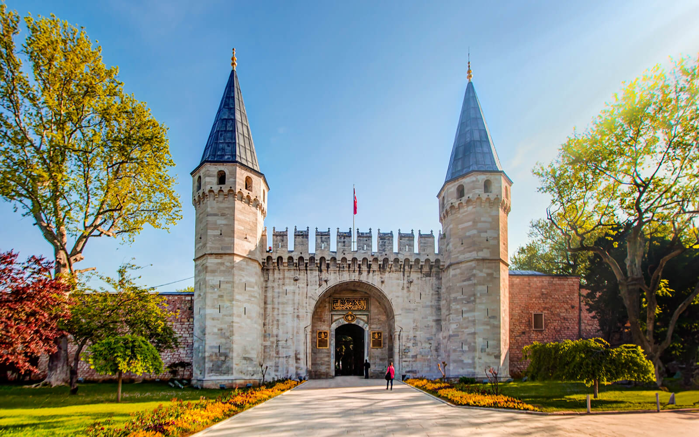
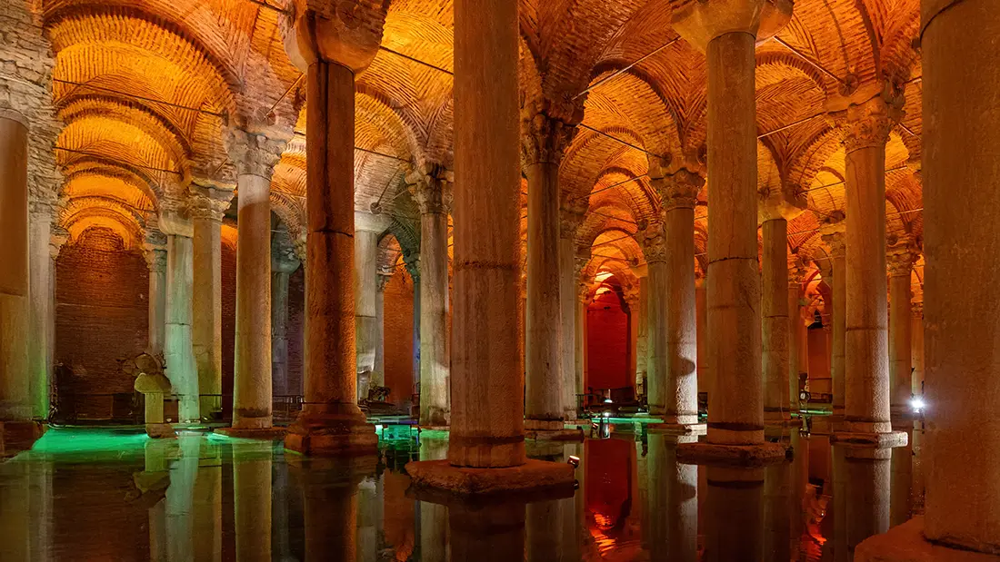
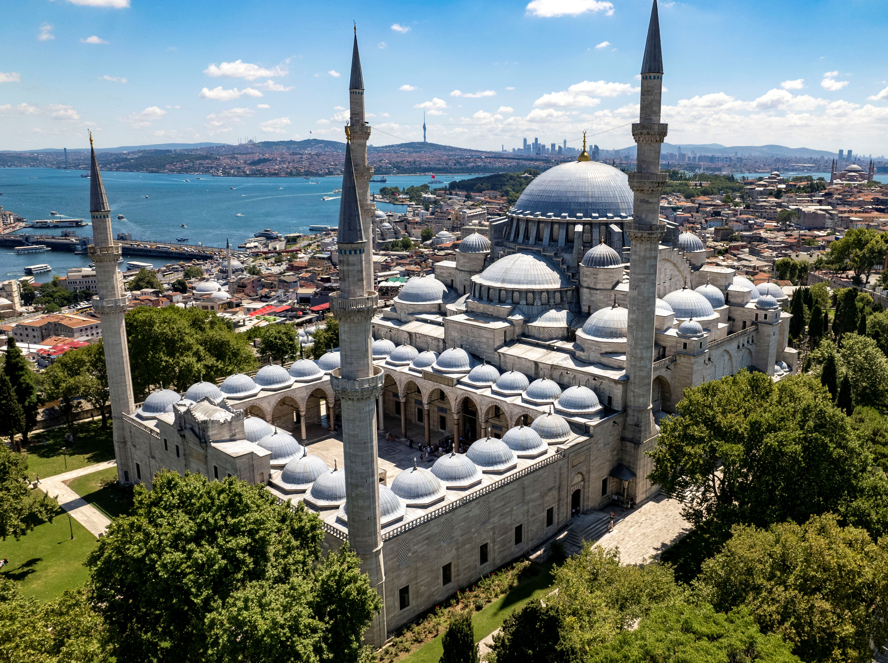
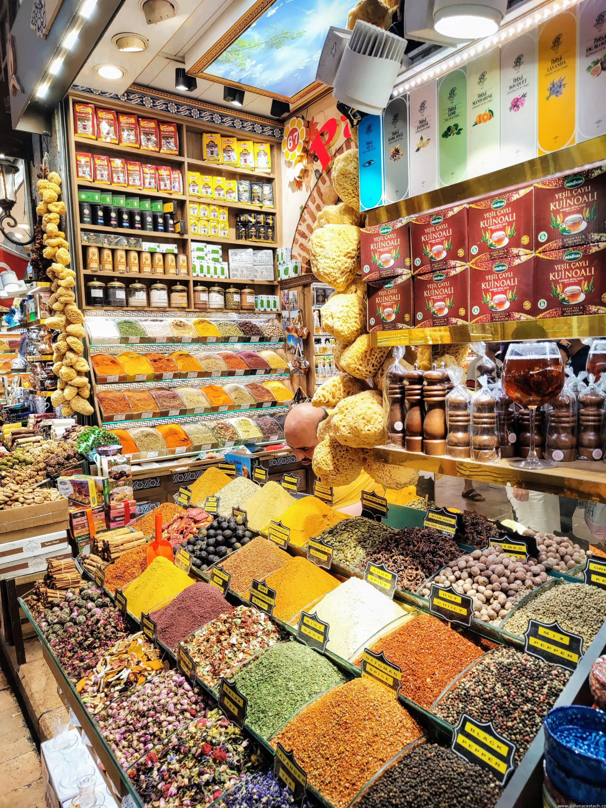

Top Attractions 2026
Essential Sites — Don't Miss
[**] = Mom's top priority · [*] = Mom recommends · [d] = Anna recommends
1. Haghia Sophia (Ayasofya) [*][d]
The most important Byzantine building in the world. "Church of the Divine Wisdom," heart of eastern Christendom for 900 years. Built 537 CE, converted to mosque 1453, museum 1934, mosque again 2020. The interior scale still stuns.
- Entry: €25 upper gallery (museum section with mosaics) / Ground floor mosque area FREE
- Hours: Tourist entry 9am-4pm daily
- Closed: During 5 daily prayers (~30 min each) + Friday 12:30-14:30
- Tip: Buy tickets online; visit at 9am opening or late afternoon

Haghia Sophia — 1,500 years of history in one building
2. Blue Mosque (Sultan Ahmed Mosque)
Istanbul's iconic silhouette. Masterpiece of Ottoman architecture with 20,000+ blue İznik tiles and six minarets (unique at the time). Built 1609-1616 during reign of Ahmed I.
- Entry: FREE
- Dress code: Women cover head/shoulders/knees (scarves provided); men no shorts
- Best time: Mid-morning weekdays to avoid crowds
- Note: Closed during prayer times (especially Friday noon)
3. Topkapı Palace [**]
The nerve center of the Ottoman Empire for 400 years. Series of walled gardens and pavilions with views over the Bosphorus. Treasury contains enormous jewels including the Spoonmaker's Diamond.
- Entry: 2,400 TL (~€68) including Harem
- Museum Pass: [OK] Valid (saves money + skip line)
- Hours: 9am-6pm (summer), 9am-4:30pm (winter)
- Closed: Tuesdays
- Tip: Go at 9am opening; allow 3-4 hours minimum

Topkapı Palace — the Imperial Gate
4. Basilica Cistern (Yerebatan Sarnıcı)
Underground Roman engineering marvel. Built 6th century with 336 marble columns holding 80,000 cubic meters of water. Eerie, dim, photogenic. Recently reopened after extensive renovation.
- Entry: 1,500 TL daytime / 2,400 TL evening
- Museum Pass: [NO] NOT valid
- Tip: Book online to skip queue; look for Medusa head columns at far end

Basilica Cistern — 336 columns rising from the water
5. Grand Bazaar (Kapalıçarşı) [**]
One of the oldest and largest covered markets in the world. Established 1461, expanded over centuries. 4,000+ shops, 60+ covered streets.
- Entry: FREE
- Hours: 9am-7pm, CLOSED SUNDAYS
- Strategy: Haggle — start at 50% of asking price
- Best for: Ceramics, textiles, jewelry, spices
6. Galata Tower [d]
360-degree city views from a medieval Genoese watchtower. Built 1348, 67 meters high. The sunset views are spectacular.
- Entry: €30 (~1,050 TL)
- Museum Pass: [OK] Valid
- Tip: Book sunset slots online in advance — they sell out

Galata Tower — Genoese watchtower, built 1348
7. Süleymaniye Mosque
Masterpiece by Sinan, the greatest Ottoman architect. Built 1550-1557 for Suleiman the Magnificent. Often overlooked by tourists — peaceful and less crowded than Blue Mosque.
- Entry: FREE
- Tip: The courtyard offers stunning city views

Süleymaniye Mosque — Sinan's masterpiece, 1558
8. Spice Bazaar (Mısır Çarşısı) [**]
400-year-old market. More manageable than Grand Bazaar. Better prices for spices, Turkish delight, tea, nuts.
- Entry: FREE
- Hours: 10am-7pm daily
- Tip: Sample before buying; adjacent to New Mosque (Yeni Cami)

Egyptian Bazaar — spices, teas, and lokum since 1660
9. Bosphorus Cruise [*][d]
Istanbul's skyline is seen at its best from the water. The continent-dividing strait makes everything feel epic.
- Public ferry: ~53 TL with Istanbulkart (Eminönü-Kadıköy, 20 min)
- Tourist cruise: €10-15 (90 min with commentary)
- Best value: Public ferry to Anadolu Kavağı and back
- Tip: Sit outside, order tea, feed simit to seagulls

Bosphorus — Europe on the left, Asia on the right
10. Kadıköy & Asian Side [***]
Take the ferry — it's part of the experience. Feels more local, less touristy than the European side. Mom and Anna both rate this as essential.
- Getting there: Ferry from Eminönü or Karaköy (~53 TL, 20 min)
- Highlights: Kadıköy Market, Çiya Sofrası, Moda district
- Tip: Half day minimum; combine with lunch at Çiya
Also Worth Visiting
Mosques
- Rüstem Paşa Camii (Eminönü) — Small but exceptional İznik tile work. Easy to miss but worth finding.
- Sokollu Mehmet Paşa Camii (Sultanahmet) — Elegant Sinan design, almost always quiet.
- Eyüp Sultan Mosque — Sacred to Istanbul's Muslim community. Pilgrimage destination.
Palaces & Museums
- Dolmabahçe Palace [d] — 19th-century Ottoman palace on the Bosphorus. 1,800 TL entry (NOT in Museum Pass).
- Pera Museum — Good contemporary exhibitions, famous Orientalist painting collection. 300 TL.
- Museum of Innocence — Orhan Pamuk's literary museum based on his novel. Strange and excellent.
- Kariye Museum (Chora Church) — Best Byzantine mosaics in Istanbul. €20. Near the land walls.
- Archaeology Museum — Underrated, strong collection, rarely crowded. Museum Pass valid.
- Yıldız Palace — NEW museums opening 2025-2026 including historic Palace Theater. 850 TL.
Other Experiences
- Rumeli Hisarı — Bosphorus-side fortress built in 1452. €6, Museum Pass valid.
- Princes' Islands — No cars, Victorian mansions, horse carriages. Day trip by ferry.
- Çiya Sofrası (Kadıköy) — Restaurant, not a monument, but genuinely one of Istanbul's unmissable experiences.
Day-by-Day Starting Points
Day 1 — Sultanahmet Essentials
Haghia Sophia (9am) → Blue Mosque → Basilica Cistern → Topkapı Palace (afternoon) → Hippodrome
Day 2 — Bazaars & Beyoğlu
Grand Bazaar (morning) → Süleymaniye Mosque → Spice Bazaar → Galata Bridge walk → Karaköy Güllüoğlu → Galata Tower (sunset) → Nevizade meyhane
Day 3 — Asian Side Discovery
Ferry to Kadıköy → Kadıköy Market → Çiya Sofrası (lunch) → Moda walk → Üsküdar → Ferry back at sunset
Day 4+ — Deeper Exploration
Land Walls walk, Kariye Museum, Bosphorus cruise to Anadolu Kavağı, Princes' Islands, Pierre Loti café